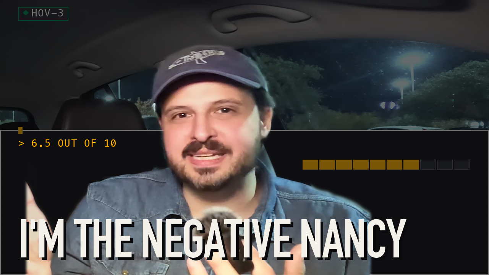

◊ Carpool Critics // EPISODE 5
We Guessed Focker In-Law's Rotten Tomatoes Score | Review

[ PREMIERES ]PREMIERES NOVEMBER 24, 2026 // FULL EPISODE DROPS ON YOUTUBE
Focker In-Law (2026): We both said that film was way funnier than we expected it to be.
◊ BEST MOMENT
“I? Much like the other ones, I think the critics are probably going to be harsh, as they always are with comedies. I would say their best ca...”
◊ CHAPTERS
- 00:00Show Open
- 06:49Spoilers and One Unnecessary Theory
- 26:37Scorecards Nobody Agreed To
◊ PARTIAL TRANSCRIPT
2 raw turn(s) were cut from the master and are not shown. This is the dialogue that survived the edit.
We should see a bit of ourselves. Okay.
Okay, and next episode we just came out of the AMC Something something I already forgot the movie theater, but we ended up watching Focker in law. It was a regal metropolitan regal metropolitan and All three of us saw it, but there's someone who we don't normally see would you please introduce yourself in the back?
Hello, I'm Spencer.
And who are you? Dave. And I'm Shane. And today, like I said, we're going to end up being, we're going to review Focker and Law. It was about an hour and 45 minutes, PG -13. Thank you, Paramount, for this. And thank you, John Hamburg, who directed this comedy. It's about Henry, son of Greg and Pam Focker, aims to marry Olivia, a .k .a. Ariana Grande, a strong -willed Focker hostage negotiator who appears to be his complete mismatch to Greg Shock, a .k .a. Ben Stiller. Father -in -law Jack Burns, which is Robert De Niro, takes a liking to Olivia and her unprecedented rise into his circle of trust sparks chaos in the family before Jack's 80th birthday party. Okay, and then a little bit for social reactions. We're going to end up doing essentially what is your reaction to it, essentially initial reaction coming to it out of the theater. Non -spoiler.
We both said that that film was way funnier than we expected it to be. So it was pretty hilarious.
Exactly. That's exactly how I would describe it. It really surprised me with how much funnier it was than the last one. and
the last one was Focker and Law Little Focker sorry okay and then my initial reaction was I came into it with no expectations outside of being like okay I don't expect I don't expect something crazy funny but it's going to have it's gifts and gaffes it's a little bit but I agree with them it exceeded my humor expectations I feel like that's a little bit of our audience. I feel like that's a little bit of Ariana Grande, I think is so good. I've watched her on SNL. And so she's so good at sort of splitting like the serious and comedic timing. And so Ariana Grande did a great job of doing that. And so initial reaction is, I think, solid.
That's fair.
Yeah, that's fair. Okay, the next step, for the people who don't know, We end up going into our blind rotten tomato guesses. We're gonna end up going all around one by one We're gonna guess the tomato reader which is what critics end up giving it One out of a hundred and then we're gonna guess the popcorn meter Which is what we think the average person is going to give it one out of 100 and we're any of our reasons why? And so I think we give the honor for the tomato meter guests to start us off to Spencer our guest What do you think the critics are gonna get it?
I? Much like the other ones, I think the critics are probably going to be harsh, as they always are with comedies. I would say their best case is probably like a 70 out of 100. 70. Any
reason in particular?
Because generally speaking, in my experience, critics are pretty brutal on a lot of comedies. And then you see the split on the audience side that doesn't take that. They're just looking for like, hey, does the story work? Does it fit the franchise? Is it like a copy? Or is it still generally funny? So that's why I think that's in general. I think I'm maybe being generous by that.
Okay. What do you think, Dave? I was going to give it around a 68. I'll give it 68 % is my score for the same sentiments. I think it will hit enough of the critics that they'll recommend the film to their readers to go watch the film. I think it was funny enough other than a lot of other comedies you know that people find funny can hit as low into the 20s and 30s and I think 68 is a very solid score for a film like this fresh that's a fresh
yeah it
is a fresh rating at 68 percent okay
so it's like quite enjoyable I'm apparently the negative Nancy I feel like for the past like multiple episodes I've we have given the critics a very low score i think the critics are going to absolutely pan this okay yeah it's been done before it's my type of movie but i think they're gonna give it probably like a 42 wow yeah i'm i'm like the the wide berth that way i think they're gonna they're gonna make it quite a what's it's just a rotten tomato yeah and and then the thing is it wouldn't surprise me It wouldn't surprise me. Because this is
essentially a reboot.
It's a reboot, right? This is number four in a series. But
with a whole, like almost a new feeling with a whole new cast. Where Greg becomes Jack in a way.
Spoilers. Soft spoiler there. Soft spoiler. But anywho, speaking about, I've already talked a little bit about what I think the popcorn meter is going to be. I think once again, we're going to see a vast difference between critic and people's reviews. So I think the popcorn meter is going to be incredibly high for this one. I think we're going to hit a 94. I think it's going to be extremely well loved for the cast. It's going to bring back something that's 16 years in the past. Right. And so it's like our age group are going to go see this and they're going to love it.
I would agree. I was going to say around a 90 as well. I think for the reasons you just described as well as I didn't expect it to be a reboot and they did a good job of bringing the callbacks to the original two movies even the third one but the original two they had several callbacks to that without overplaying it and making it so they hit that nostalgia meter pretty perfectly which is how you're going to get a score in the 90s on the audience side that
was a word i was gonna say that it hit the nostalgic factors um so i was gonna give it a 92 percent so where it's funny that we're all in the 90s because we love yeah what movies
do we love
but generally the whole crowd was loving it and they were clapping and yeah i
will say our audience for the theater was so good everyone was laughing yeah and so i think that's going to uh for for anyone seeing this on Thanksgiving, you're gonna love it. So next up, we're gonna end up giving a little little bit of spoiler warning. And so this is hard spoilers, not soft spoilers for those. So if you don't want to learn about the movie, feel free to click away. Okay, in general, we're gonna figure out I guess anyone can clue in on this one. But what's a scene that ended up surprising you and like what did we not see coming uh
probably my favorite part of the film was when jack says i don't want to hold this the whole time when jack when jack says um was the defiling my mother's ashes not enough for you and then immediately cuts to just the way robert denier said it it It just killed me. I couldn't stop laughing to the point that the director took such a funny moment and immediately went into a serious scene. If he was like, when you were trying to hide the laughter because there's a serious scene going on. I think that was a very intentional move by the director. And I think that was brilliant. And so that scene, the whole combination of it, I didn't expect to be dying laughing and then trying to hide my laughter immediately going into I started laughing
because you were laughing you know such like a good transition because that's like I hit that point and then I sort of mellowed out and then I'm like why is Dave still laughing like transition so I start laughing again because now Dave's laughing at like this really serious point in this crux in this movie and
i i think that's a great part of of any comedy film is when you just you're wanting you're wanting to stop laughing but you can't and that hit this movie hit the note which i did not expect at all going into this i thought this was going to be a stale revamp of a film of a trio film um coming out again but it was really funny it's not that for sure any
surprising scenes for you spencer um
not surprising necessarily i i think it was just well done how they there was a cut there was two scenes that came to mind that they could have easily done the exact same thing from the original and it would have been funny one was the bike race when they're biking you would expect ariana gandhi's character to get seriously injured then jack is the one that actually almost gets seriously injured but none of them do actually so like because that was a big trope from the first movie where like there was the big injury to the bride and then i think at at the end when you know like greg greg's character has always been the softer trying to let and or his family have been and then to see jack flip that on its head and show him the mcat results that you know and when he kept him and that kind of beat jack's character from the beginning but also be the fully formed one that has happened since the sequel and that was just a really well
yeah it
was also explanation as to why he was accepting accepting him as his son exactly
because his
character whole his whole arch wouldn't have eventually ever accepted greg because he was a smart a smart guy now all of a sudden well
you you nailed it because like he never really like in any of the movies they never he never really they never really had that conversation on on on camera at that level they kind of they touched it in the first they touched it in the second but they never really like him they'd ever had that like heart to heart of like no i actually do care about you i give you our time that you're i value you in as part of the family
correct yeah and i'm trying to think was there anything that was surprising for me i was surprising that they didn't do more with the ashes i thought they were gonna bring that back yeah i thought there was going to be something with like they they played up this dog character so well of being like this oh the dog the dog yeah and so they were there i think they were they were trying to like play that up because i think it was the cat that pisses on the ashes yes i remember correctly so i thought they were going to do something with the dog like pissing on the ashes and ben stiller's character making the dog piss on the ashes again and go through all that. That would have been over the top, and that would have been one too many, probably. That
would go against the dog's character arc.
Very true. I did like the dog's character arc. That surprised me how well I ended up liking the dog. That was good. Nine. Nine. The dog's German, by the way. Okay. Okay. So, was there... we'll put it we'll put it this way there's like in general with all these comedies there's there's sort of like a coming of age character development um aspect to every single one of them i remember for the first the second problem is i don't think i saw little Focker the third one i just remember the first and second there's always some sort of like character development um was there was there there any point in this character development that felt off to you because I forgot okay here's here's my hot take okay I'm gonna give you one hot take it felt it felt uh uh weird to me it's the only way they could make this movie was to make Ben Stiller's character I guess childlike again and I felt like they could have done I don't know I just felt it was weird the plot it felt off you
you felt like greg was a little too much of a caricature of a helicopter father or like a
helicopter father i mean here's the problem i didn't end up re -watching any of these movies and so i'm going off my memory of what i ended up remembering from it and so i don't remember robert de niro's character being that much of a helicopter parent outside of like he just seemed intense like the the the in imposing father figure yeah that character was never a helicopter yeah
was never a helicopter no i
think they made greg's character like um basically a combination of of jack and his father like they they they his he was his father as an involved parent of these kids and that which has resulted in in them both having their own emotional either communication or other issues that they have where and then when presented with a like his son who he's super close to wanting to get wanting to ask her to marry him he reverts into the uh jack character which he never was or never embodied but becomes that almost so like they kind of it was a little it was a little weird where they merged them without really showing you the this soft dad character outside of like the first five minutes of the movie and then the rest of the movie he's basically the jack character without saying he's the jack character
yeah it makes for good comedy yeah don't get me wrong but it's like i'm probably thinking way too hard of the story at this point where it just seemed like here's why i think critics are gonna pan it right it's because they end up to make the comedy happen so well they have to revert a lot of these character arcs of like of growing right well
he was so like you were saying his father -in -law was a controlling father figure yeah right um in terms of what they can do what they can see uh who they can meet who who they can date, who they can...
Jack. Jack. Was Greg trying to control his son's future, where he's going to school, you know, where he's going to live. And you kind of that character art, I kind of do see that because he was so concerned about. about minute things, you can see that he can be concerned about those minute things with his children. And so I think that for me translates well into some of his behavior outside of him turning into Jack. I think a lot of the films try to portray that multiple times his you know his wife said you're becoming my father um but i don't transition
okay yeah i mean also what's the term for like whatever of disbelief or it's like to make something happen you just suspension suspension of belief or disbelief or belief one of those it's basic disbelief or it's basically just go with the flow right and that's like yeah people can revert to their childlike state that happens all the time i guess i'm i'm word vomiting i
mean i think the flip side of your point is the one of like the main characters because like obviously the main characters in this series have always kind of been greg robert genaro's character jack and then his parents and the other one jack jack's character in this movie was a continued extension of where he's been throughout the entire series how he's progressed each movie onward his personality they They let his personality come to a comic effect. They never lost how he morphed in the last two movies into a softer, more family -focused, less family control and more embracing. I mean, you could see him hugging and just a mode of communication. So it was interesting that of where Greg was being put into an entirely new character, in a lot of ways, Jack was allowed to continue where he was left off the last time.
the problem is I also didn't see Little Focker so I don't I haven't the movie doesn't show us the softer side as to explain why his kids clearly both love him his daughter clearly loves Greg his son clearly loves him and there is no explanation as to why they're willing to put up with his shenanigans for so long and still deeply care for their father's feelings. Like when his son ate that piece of steak, he only did it because he could tell that he wanted someone to eat it.
Right. That was a great scene. So talking about characters, was there a standout character? It's a big, big cast of people. people it's like i guess one what was your favorite character two what was your favorite cameo
i think favorite character i thought i thought aria grande was very well cast for that movie and her character was well written um because she was like she had the again it was like it was like a call her character almost was a callback to the first movie's jack character in some ways because of her background and then but then again at the core it was linking I would say it's linking to like what was the second movie to me which was more about the importance of community open communication love caring etc between families because at her core all she wanted was clear communication she didn't really she was like if you want to move to Chicago move to Chicago like it doesn't just you need to you need I want to communicate with you as an adult person even though she has all this negotiated so I think that character was would be was well written and a great character as far as cameos go I mean obviously like you can't not have Owen Wilson's character I mean it's just Kevin is such a well written such a well written side character as well that it was fun that he's kind of been a common link in all of them also there's probably a cameo I'm missing but that was
there's a lot I was like the one that I noticed with beginnings of cameos does anyone Anyone ever watch Vine or was a part of that app and know the name Liza Koshy? I saw her and I'm like, what?
She's still working.
She's still working. I know she had a TV show at one point. I'm like, okay. She made it into a movie with Ben Stiller. She's still there. And then what was that other? I'm not sure if I'm stealing your thunder, but who's the black dude in the airport? Oh, yeah. Oh, yeah. He's from SNL. Yeah. Oh, really? Right.
He might have been on SNL before. I don't know if he's on there anymore. But yeah,
there was a character in SNL and he did a really good job hamming it up. And so I was a big fan of that. But overall, when it comes to like favorite character out of all of them, big fan of a comedic relief. And so daughter's boyfriend, I almost said I already forgot his name, but it's he played such a good like stoner like just open wild free spirit and he was such a good counterpoint to his son just like the daughter the the daughter and her boyfriend and then the son they they made a good uh comedic pairing we'll pull it that way there was always a good good way for him to uh insert humor he
reminds me of like some 90s character like characters in films I don't want to say Jay and Silent Bob films but there's Mystic Pizza and those kinds of films so there's a nostalgic he's clearly very young but he always plays the part he's been in a couple films I feel
like he's probably stereotyped as an actor he's typecasted he's played this character in a lot of different movies but he does it well and I think it
hits the for us the nostalgic 90s typical typical high school kid. Good casting, whoever the casting director is.
Obviously, bringing the stewardess back from the first one was hilarious that she was still there. That was a nice callback to the original movie.
So, I guess, I don't think Owen Wilson is a cameo because he's a big role. But because if he is, clearly, I love him. He's so funny. I guess it's better for him. wow and my favorite actor
would have been Robert De Niro this movie would not have been as funny for me if it wasn't for Robert De Niro I
think Dave was just crushing on shirtless Robert De Niro Robert De Niro is absolutely ripped for an 80 year old you want to see shirtless Robert De Niro with his muscles go for it this is the movie for you and
uh you're what you're both fun you both picked ariana grande right uh
i picked a comedic release but i i did like ariana grande in the beginning yeah so i
a lot of her scene like she's a phenomenal actor but she was overacting a lot and i feel like it works her overacting works because ben stiller overacts and so it's fair um i think them together worked like both of them usually when you have two big personalities in the scene it kind of doesn't really work yeah but for some reason it worked like it worked with both of them they played off each other i feel like
that's how these movies have always been because you think about the cast as a whole like i mean it's loaded like the you know robert de niro and ben sillier just by themselves in a movie that's two huge actors that are but and then you throw on terry polo and life danner and you know like and now this one ariana grande and like owen wilson like these are there's a lot of of people in there that are and then like you know they go back so anyway so
it's almost like trying to be i think yeah i think
i think they play into it because of that's what i think to your point makes robert and you're dropping nearest characters so and him himself so much like stick out so much is that he he just like is just able to kind of like cut through that in a really uh like direct but also understated way i
greatly
but yeah i will say when it comes to like comedy with robert de niro he plays like the serious person so well when ben stiller had to end up seeing that john legend song ben stiller like it's a solid it's i feel like it's two minutes of ben stiller singing but we were laughing through the whole thing because of robert de niro's facial expressions and like how into it ben stiller was his
robert de niro's facial expression looks so real like what anyone would be feeling in that moment
i felt the cringe into my body and speaking of cringe was there anything outside of that that scene scene that just felt like just cringe worthy
there's a lot uh what i uh cringe scene that i really loved was when i'm at a public restroom and I'm trying to get the soap out and get the water out. I always feel that cringeness in my daily life. And I actually thought somebody needs to put this in a movie or a show because it's just a universal experience for so many people. And lo and behold, it was in. ben
stiller and ariana grande were having like the the end of the movie like come the big talk yeah it's like the big talk where they everyone gets back together type of thing imagine having that in the women's restroom ben stiller in the women's restroom in an airport and then there's like lady walks in between wash your hands it's they do such a good job with comedic timing i have to i
feel like she must be someone famous too all right
yeah probably yeah unique look that yeah how could she not and she did talk into it and so she you know she's probably sag was there any other super cringe moment for you uh
that one thing's very super cringe really i mean there was definitely some awkward moments that were you know like intentionally awkward so in a good i mean like i think like the the kitchen when they're cooking together like that was like well i wouldn't say it's cringe but it was definitely like amping up the like awkwardness of cooking with somebody it's like
when the saxophones are getting loud yeah yeah exactly like you've never heard
the person before like you know like like the call like the call out still when he gets when he burns her and like that's like that's a restaurant call out like in a classic kitchen so there's definitely some moment that was just a little bit surprised uh in that scene that we're like but i wouldn't say it's cringe it's more just like if you've ever cooked for somebody you know if you haven't cooked before you know the feeling of like you're not in sync of of where your body goes where how you how you move around each other particularly if the kitchen isn't large yeah
they did a great job of like physical comedy as well exactly that was such a good thing and so they had a little bit a little bit of comedy for everyone and so on that note
but your current scene is the john it's the john legend singer i was
cringing so hard i was it made me want to just close my eyes it was so bad it was so bad
that is fair yeah that scene was probably really fun for them to film though they probably like it out takes out of that so out of that scene they're probably going to be legendary on the uh probably doing 10 takes yeah at least and all your edges yeah yeah and they're all just dying every time okay
and then i want to end up wrapping it up i know we've been talking a bunch we would talk more but we can only do about 30 minutes for this so we're gonna end it with a tachometer which is aka your score out of one out of ten and um give a recommendation essentially would you see it in theater streaming keep it for a phone just sort of your suggestions for them and so uh guest take it away spencer
uh i would say nine out of ten if you're especially if you're a fan of the of the series like that's it's definitely had the right to call back to the all the best parts of the first two movies and then some of the best parts of the third the third is is my least favorite in this this movie reinforces that for me. So, yeah, and I think, obviously, I'm always a fan of seeing it in theaters. Streaming is great at home. Watching it on a phone, that's just, like, last resort. You have no other option. But I would definitely, it's a good, you need a good outing with your family for Thanksgiving. Highly recommend this one. It's a good, it would be a good evening out. It's a good Thanksgiving.
Yeah, or an afternoon out or whatever. I would give it a 8 .7 out of 10, which is very high for me for a comedy film. I would definitely, this is a film I would watch again. But something that Spencer said is that if you don't know the lore of the Focker series, some of the scenes will not hit. So any fan of the film, and I'm sure everyone has seen the Focker. So if you've seen the films, go watch this. Highly recommend going with a group of people, maybe for Friendsgiving, or if you have some family that you can go with, I think you will enjoy this film, share a bunch of laughs, and enjoy talking about it afterwards.
Into a little Focker and Law. And then for me, I'm like splitting the difference between my tomato and my popcorn meter. So for me, I think it is a solid 6 .5 out of 10. What does that mean to you who's thinking, you think, oh my gosh, these people rated it so high. Why is Shane so low? It is a good movie. it is a watch it once laugh about it it was a great movie you don't need to watch it again that's my view of it i don't think you need to watch this in theaters if you want to i think it'd be a great movie to watch in theaters but i think you can wait for this to come to streaming and i think you can watch this on your tv at home and get a good laugh as well and so I'm sort of hit or miss on the TV on the theater you can skip it if you want it's a good movie though if you want something on Thanksgiving to go watch okay that's all we got easy peasy bye bye
Episode 5.